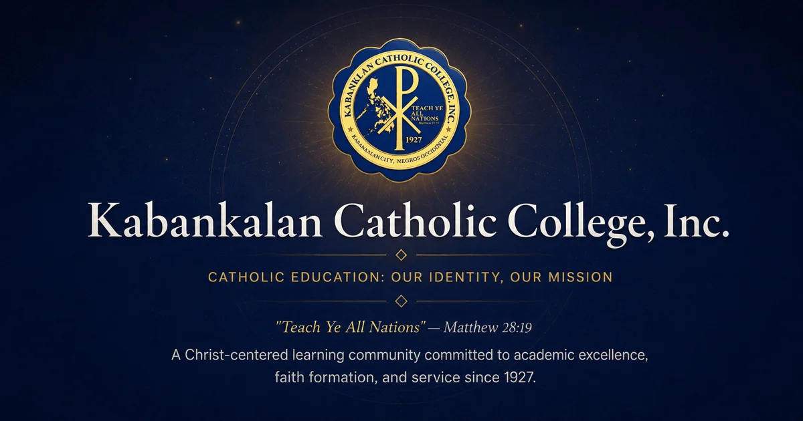

Meaningful learning
Build knowledge and a strong foundation for lifelong learning.
01

Welcome to Kabankalan Catholic College, Inc. (KCC), a Catholic college in Kabankalan.
Education is about more than what happens in a classroom. KCC’s Catholic identity offers a foundation for learning, personal growth, and values formation.
A foundation for learning and discovery.
Personal growth guided by meaningful values.
Learning and growing alongside others.
Learning, character, and community are at the heart of a meaningful college experience.
Build knowledge and a strong foundation for lifelong learning.
01Grow in character and reflect on the values that guide your choices.
02Explore your interests, develop your abilities, and find your direction.
03Take part in a college community shaped by learning and connection.
04Explore academic communities featured by Kabankalan Catholic College and learn more about their activities.
Discover KCC's College of Management, Accountancy, and Technology, featured in its CMAT Pinning 2025 event.
KCC has also featured its Criminology students during Reception Rites, recognizing their commitment and preparation for public service.
Contact KCC to learn about its current academic offerings, available courses, and admission requirements.
A college journey is shaped by the people, ideas, and experiences along the way.


These are illustrative template photos, not verified KCC campus images. Replace them with approved KCC photography when available.
Updates and stories from the KCC community will be shared here.
Use this space for verified notices from Kabankalan Catholic College.
Share student, faculty, and community stories here when they are ready to publish.
Add confirmed academic dates and community events when official details are available.
Explore the college and find out where your learning journey could lead.
Verified contact details are not yet listed on this page. Add KCC’s official phone number, email, address, or inquiry channel here when confirmed.